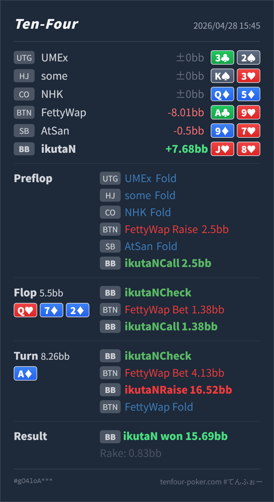

Preflop
良いJ♥8♥ は defend 可能な suited hand です。
GTO基準で明確にズレやすいのは、flop Q♥ 7♦ 2♦ の call と、turn A♦ で J♥8♥ を check-raise bluff に回した点です。Preflop の BB defend は問題ありません。ただし postflop は、no pair / no diamond / 低い backdoor だけの hand で OOP から粘り、さらに flush 完成 turn で大きく check-raise しているため、理論上は bluff 候補としてかなり下側です。結果は BTN が A♣9♥ を fold して成功していますが、これは exploit 寄りの成功として扱うのが安全です。
J♥8♥A♣9♥Q♥ 7♦ 2♦ / A♦J♥8♥ は BTN 2.5BB open に対して defend 可能な suited hand です。preflop call 自体は自然です。Q♥ 7♦ 2♦ は BTN 側に強い Qx、overpair、diamond draw が多く、BB は広く守るとはいえ OOP で実現率が低いです。J♥8♥ は no pair / no diamond で、call するにはかなり薄い hand です。A♦ は BTN の Ax に当たり、さらに diamond flush も完成します。BB 側も flush は持てますが、J♥8♥ 自体は equity も blocker も足りません。J♥8♥ はその条件から外れています。J♥8♥A♣9♥2.5BB, SB fold, BB callQ♥ 7♦ 2♦ / A♦1.38BB, BB call4.13BB, BB raise 16.52BB, BTN fold15.69BB
良いJ♥8♥ は defend 可能な suited hand です。
Q♥ 7♦ 2♦悪い寄りJ♥8♥ は no pair / no diamond で、backdoor heart も turn と river の両方が必要です。
A♦明確に悪いJ♥8♥ は no diamond / no pair / no straight draw で、raise bluff としては下位です。
| 論点 | その場で起きがちな見え方 | どこがズレやすいか | 次回の基準 |
|---|---|---|---|
| small c-bet への flop defend | 1.38BB が小さいので、かなり広く call できそうに見える | OOP では安くても実現率が低く、no pair / no diamond / 弱い backdoor だけの hand は turn 以降で苦しくなります。 | small bet でも、最低限 pair、diamond、強い backdoor、overcard 構造のどれかを持つ hand を優先する |
| flush 完成 turn の check-raise bluff | A♦ は scare card なので、相手の弱い hand を降ろせそうに見える | scare card は相手にも強く当たり、BTN の bet range には Ax と diamond が増えます。ブラフ側は blocker と残り equity が必要です。 | flush 完成 turn の raise bluff は、diamond blocker か draw equity を持つ hand から選ぶ |
| ストリート | その時点の見え方 | 実ハンドの位置づけ | 評価 | その場の一手 |
|---|---|---|---|---|
| Preflop | BTN open に対して BB は最も広く defend する席です。suited connector / gapper もかなり call bucket に入ります。 | J♥8♥ は defend 可能な suited hand です。 | 良い | call で問題ありません。3bet に回すより、BB の広い call range に残す hand です。 |
Flop Q♥ 7♦ 2♦ | BTN は Qx、overpair、diamond draw、A-high backdoor を多く持ちます。BB は 7x/2x や一部 two pair / set / draw を持てますが、OOP で実現率は低いです。 | J♥8♥ は no pair / no diamond で、backdoor heart も turn と river の両方が必要です。 | 悪い寄り | small bet でも fold 寄りです。続けるなら、diamond 持ち、pair、gutshot、強い backdoor を優先します。 |
Turn A♦ | A は BTN の range に強く当たり、同時に diamond flush も完成します。BB 側も flush はありますが、BTN の bet に対して無条件で攻め返せる card ではありません。 | J♥8♥ は no diamond / no pair / no straight draw で、raise bluff としては下位です。 | 明確に悪い | check-fold が基本です。check-raise bluff は K♦x、J♦x、pair + diamond など、blocker か equity がある hand から作ります。 |
A♣9♥ top pair no diamond を fold して成功しましたが、J♥8♥ のような no-blocker hand で再現しにいくと過剰 bluff になりやすいです。A♦ を広く bet し、check-raise に top pair no diamond をすぐ fold する傾向があるなら、このライン自体は exploit として利益が出ます。J♥8♥ より diamond blocker を持つ hand を優先した方が、call されたときの equity と相手の strong range への圧が残ります。